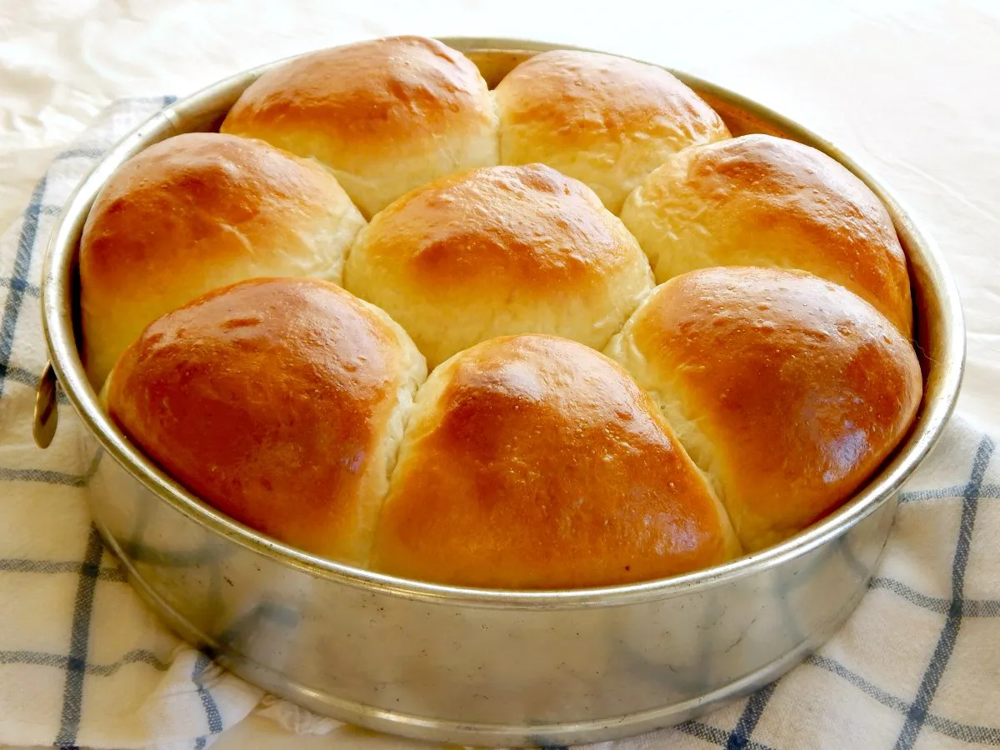

Japanese Milk Bread

The following recipe will teach you how to prepare Japanese milk bread
Ingredients
- 4¾ cups bread flour
- 1¾ cups milk
- 2¼ Tablespoons sugar
- 1⅔ Tablespoons butter
- 2 teaspoons sea salt
- 3⅓ teaspoon active dry yeast
Steps
- Mix: Attach the dough hook to your stand mixer. Add all the ingredients except the butter. Mix on low until there's no more dry flour. Then add the butter and beat on high speed. The dough is ready when it forms into a ball and the surface is smooth and glossy. Check for proper gluten develop using the window pane test. Timing will vary but it took me 10 to 13 minutes.
- Proof: Form the dough into a smooth round ball and place into a see through proofing container that's been coated with oil. Proof until doubled in size in a warm, humid environment.
- Bench rest: On a well floured surface, divide the dough into 6 even pieces and roll each into a ball. Loosely cover and let it rest for 15 minutes.
- Shape: Roll each ball into an oval shape. Flip it over so the surface (crust) is on the bottom and do a letter fold (2 folds). Then roll it up to form a spiral and then pinch the seam closed. Place three spirals in each 1 lb loaf pan. Repeat for the other pieces
- Final proof: Proof in a warm humid place until doubled in size or it's 1 cm below the rim of the loaf pan. Preheat your oven to 356° F.
- Bake: Bake at 356° F for 25 minutes or until it gets a golden brown crust. For a shiny, golden crust: Immediately after removing from the oven, brush on an egg wash coating for a shiny crust. Crack an egg in a small bowl and mix well. Using a pastry brush, apply a thin coating to the crust. The heat from the bread will cook the egg, giving you a shiny golden crust.